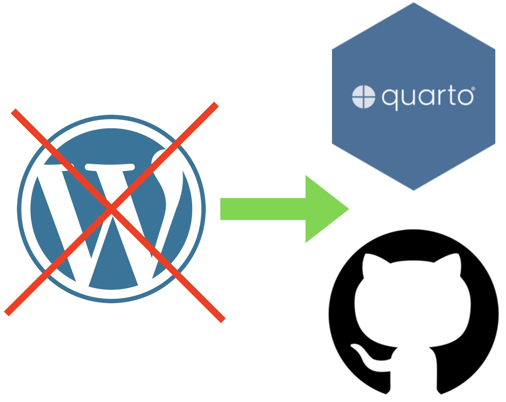

Mon site perso fait peau neuve !
Je vous explique ici quelles étapes j’ai suivi pour effectuer la migration. Au boulot !

Créer son blog avec Quarto
- Ouvrir
RStudio - Créer un nouveau projet
Create Quarto Blog - Cocher
Create a git repository
Un blog Quarto vierge est ainsi créé contenant ces fichiers :
_quarto.yml: Fichier du projet Quartoindex.qmd: Page d’accueilabout.qmd: Page “À propos”posts/: Répertoire contenant les posts en Quarto Markdown (.qmd)posts/_metadata.yml: Options partagées des postsstyles.css: CSS customisé pour le style du blogMyBlog.Rproj: Raccourci d’ouverture du projet Quarto
Dans le fichier _quarto.yml ajouter la ligne output-dir pour renseigner le répertoire cible pour la génération du site :
project:
type: website
output-dir: docsEnfin pour le générer et avoir le rendu du blog il suffit d’exécuter build > Render Website.
Héberger son blog avec GitHub pages
Déployer le blog
Après avoir créé un nouveau dépôt sur GitHub à partir du .git local, aller dans Settings > Pages puis dans Build and deployment et choisir comme source Deploy from a branch. Puis sélectionner la branche main et le dossier /docs avant de valider avec save. Après quelques minutes le lien vers la page du blog est généré : kevinpolisano.github.io
Nom de domaine customisé
L’hébergeur de mon site WP était o2switch, que je recommande pour la grande réactivité de leur service technique.
Du côté de ce registar voici les étapes à suivre :
- Dans
Espace client > Commander un servicechoisirCommander un nom de domaine(pour ma part :kevinpolisano.fr) - Dans
Espace technique > Domaines configurésremplirConfigurer un nom de domaine(pour ma part :kevinpolisano.fr) puis activerLet's Encrypt SSLdans l’ongletSécuritédu cPanel. - Dans
Espace technique > Zone Editorentrer les champs suivants (à adapter selon le blog) :
| Nom | TLL | Type | Enregistrement |
|---|---|---|---|
| www.kevinpolisano.fr. | 14400 | CNAME | kevinpolisano.github.io |
| kevinpolisano.fr. | 14400 | A | 185.199.108.153 |
| kevinpolisano.fr. | 14400 | A | 185.199.109.153 |
| kevinpolisano.fr. | 14400 | A | 185.199.110.153 |
| kevinpolisano.fr. | 14400 | A | 185.199.111.153 |
- J’ai également créé un fichier
CNAMEà la racine du dépôt git, contenant la lignewww.kevinpolisano.fr.
Du côté de GitHub Pages voici les étapes à suivre :
- Dans
Custom Domainrenseigner le nouveau nom de domainewww.kevinpolisano.frpuis cliquer sursave. À ce stade j’ai obtenu à tour de rôle les messages d’erreurs suivants :
DNS check unsuccessful
Both kevinpolisano.fr and its alternate name are improperly configured Domain does not resolve to the GitHub Pages server. For more information, see documentation (NotServedByPagesError).
DNS valid for primary
kevinpolisano.fr is improperly configured Domain does not resolve to the GitHub Pages server. For more information, see documentation (NotServedByPagesError).
J’ai du attendre quelques heures pour que la propagation du DNS soit effective. On peut suivre celle-ci sur DNS Checker en s’assurant pour le domaine racine
kevinpolisano.frque les enregistrementsApointent vers les IP GitHub Pages; et pour le sous-domainewww.kevinpolisano.frque l’enregistrementCNAMEpointe verskevinpolisano.github.io.Une fois que le bouton
savedonneDNS check successfulon cocheEnforce HTTPSet on vérifie qu’en tapantkevinpolisano.frdans la barre de navigateur on est bien redirigé vers le blog à l’adressehttps://www.kevinpolisano.fr/
Exporter ses articles Wordpress en HTML vers Markdown
J’ai expérimenté trois solutions :
- GitHub - SchumacherFM/wordpress-to-hugo-exporter
- GitHub - lonekorean/wordpress-export-to-markdown
- GitHub - palaniraja/blog2md
La première conserve certaines balises HTML (typiquement pour l’usage de la couleur et la mise en forme), tandis que les deux suivantes exportent en pur Markdown.
Wordpress to Hugo Exporter
La première solution consiste à uploader l’archive sur le site WP dans le dossier wp-content/plugins à activer le plugin et utiliser Outils > Export Hugo. Ce dernier n’a pas fonctionné donc j’ai utilisé le Terminal de mon serveur d’hébergement (O2switch) (comme expliqué ici) :
cd wp-content/plugins/wordpress-to-hugo-exporter/
php hugo-export-cli.phpLe script créé un fichier /tmp/wp-hugo.zip (cela peut prendre quelques minutes). Dans le gestionnaire de fichiers (via le Cpanel d’O2switch) j’ai effectué une recherche du fichier, qui m’a indiquée que celui-ci se trouvait dans le dossier caché .cagefs/tmp/.
Wordpress export to Markdown
Premièrement on effectue un export du contenu complet de WP au format export.xml (dans Outils > Exporter), que l’on place dans l’archive du code téléchargé. Puis on exécute le script :
npm install && node index.jsBlog2md
De même on exécute :
npm install && node index.js w export.xml outNettoyage des articles exportés, liens, images, …
Lorsque mes billets WP contenaient du texte brut, du code ou du \(\LaTeX\), j’ai utilisé l’export Markdown de Wordpress export to Markdown; tandis que pour mes billets contenant une mise en forme travaillée (avec notamment l’usage de couleurs), j’ai utilisé l’export Markdown + HTML de Wordpress to Hugo Exporter, qui a aussi le bon goût d’exporter toutes les images dans wp-content/uploads/. Pour ces fichiers Markdown + HTML, j’ai écrit un script Python permettant entre autres de :
- Remplacer les liens HTML par des liens Markdown, pour les images en particulier par l’insertion de
en ayant préalablement copié l’image couranteimg(privée de sa dimension) du dossieruploads/vers le dossierimages/du répertoire courant correspondant au billet. - Remplacer les footnotes HTML par des footnotes Markdown.
- Remplacer les blocs de code HTML par des balises de code Markdown (ici précisant le language Matlab)
import re
import os
import shutil
# Dossiers source et destination pour les images
UPLOADS_DIR = "../uploads"
IMAGES_DIR = "images"
INPUT_FILE = "index_prev.qmd"
OUTPUT_FILE = "index.qmd"
# Créer le dossier images s'il n'existe pas
if not os.path.exists(IMAGES_DIR):
os.makedirs(IMAGES_DIR)
# Lire le fichier d'entrée
with open(INPUT_FILE, "r", encoding="utf-8") as file:
content = file.read()
# Fonction pour traiter les images
def process_images(content):
image_pattern = re.compile(
r'<a [^>]*?href="[^"]*?/([^/"]+)"[^>]*?><img [^>]*?src="[^"]*?/([^/"]+)"[^>]*?></a>'
)
def replace_image(match):
image_file = match.group(1)
base_name, ext = os.path.splitext(image_file)
# Vérifier si le nom contient les dimensions WxH
dimension_pattern = re.compile(r"^(?P<name>.+)-\d+x\d+$")
dimension_match = dimension_pattern.match(base_name)
if dimension_match:
base_name = dimension_match.group("name") # Nom sans dimensions
original_image_file = base_name + ext
original_path = os.path.join(UPLOADS_DIR, original_image_file)
# Si l'image sans dimensions existe, utiliser celle-ci
if os.path.exists(original_path):
image_file = original_image_file
# Copier l'image
src_path = os.path.join(UPLOADS_DIR, image_file)
dest_path = os.path.join(IMAGES_DIR, image_file)
if os.path.exists(src_path):
shutil.copy2(src_path, dest_path)
return f""
return image_pattern.sub(replace_image, content)
# Fonction pour traiter les blocs de code
def process_code_blocks(content):
code_block_pattern = re.compile(
r'<pre class="brush:[^"]+">(.*?)</pre>', re.DOTALL
)
def replace_code_block(match):
code_content = match.group(1).replace(">", ">").replace("<", "<").replace("&", "&")
return f"```matlab\n{code_content}\n```"
return code_block_pattern.sub(replace_code_block, content)
# Fonction pour traiter les footnotes
def process_footnotes(content):
footnote_body_pattern = re.compile(
r'<sup id="(?P<id>[^"]+)"><a href="#[^"]+" title="(?P<title>[^"]+)"[^>]*>\d+</a></sup>'
)
def replace_footnote_body(match):
footnote_id = match.group("id")
footnote_content = match.group("title").replace("'", "'").replace(""", '"')
markdown_footnote = f"[^{footnote_id}]"
markdown_definition = f"[^{footnote_id}]: {footnote_content}"
return markdown_footnote, markdown_definition
paragraphs = content.split("\n\n") # Diviser en paragraphes
updated_paragraphs = []
for paragraph in paragraphs:
matches = list(footnote_body_pattern.finditer(paragraph))
if matches:
definitions = []
for match in matches:
footnote_markdown, footnote_definition = replace_footnote_body(match)
paragraph = paragraph.replace(match.group(0), footnote_markdown)
definitions.append(footnote_definition)
updated_paragraphs.append(paragraph)
updated_paragraphs.extend(definitions)
else:
updated_paragraphs.append(paragraph)
return "\n\n".join(updated_paragraphs)
# Fonction pour supprimer les balises <li id=X>
def remove_list_items(content):
list_item_pattern = re.compile(r'<li id="[^"]+">.*?</li>', re.DOTALL)
return list_item_pattern.sub("", content)
# Fonction pour supprimer l’indentation des balises de paragraphes
def remove_paragraph_indentation(content):
paragraph_pattern = re.compile(r"\s*<(/?p)>")
return paragraph_pattern.sub(r"<\1>", content)
# Appliquer les transformations
content = process_images(content)
content = process_code_blocks(content)
content = process_footnotes(content)
content = remove_list_items(content)
content = remove_paragraph_indentation(content)
# Écrire le fichier de sortie
with open(OUTPUT_FILE, "w", encoding="utf-8") as file:
file.write(content)
print(f"Transformation terminée. Résultat enregistré dans {OUTPUT_FILE}.")Bien sûr j’ai aussi modifié les exports à la main lorsque je repérais des rectifications ponctuelles (non automatisables). L’export en pur Markdown a quant à lui le bon goût de renseigner les liens cassés, ce qui permet au passage de faire un nettoyage des liens morts témoins du pourrissement des liens du web. À l’avenir, je vais tâcher de privilégier la bibliographie (.bib) renseignant les métadonnées des sources (titre, journal, date, …) pour que celles-ci restent identifiables en cas de liens morts, et donc potentiellement trouvables ailleurs si l’article a été hébergé à une autre adresse.
Gestion des commentaires
J’ai opté pour giscus, qui est un dispositif relativement léger, basé sur les discussions GitHub, open-source et sans publicité. Le seul bémol est qu’il faut disposer d’un compte Github pour être autorisé à commenter. L’avantage par ailleurs est que l’on est moins sujet aux spams et aux commentaires injurieux (l’authentification, plus coûteuse en temps, en dissuadent plus d’un).
Mise en place de la fonctionnalité
Pour activer les commentaires il faut remplir la page giscus détaillant la marche à suivre :
- Installer l’application giscus
- Activer les discussions Github dans l’onglet
Settings > Featuresdu dépôt en cochant la caseDiscussions. - Renseigner le dépôt public (dans mon cas
kevinpolisano/blog) ainsi que les propriétés escomptées.
La balise HTML générée est la suivante dans mon cas :
<script src="https://giscus.app/client.js"
data-repo="kevinpolisano/blog"
data-repo-id="R_kgDOM9ReCA"
data-category="Announcements"
data-category-id="DIC_kwDOM9ReCM4CmGgm"
data-mapping="pathname"
data-strict="0"
data-reactions-enabled="1"
data-emit-metadata="0"
data-input-position="bottom"
data-theme="preferred_color_scheme"
data-lang="fr"
data-loading="lazy"
crossorigin="anonymous"
async>
</script>Ce qui me permet de remplir les options de commentaires dans le fichier _quarto.yml comme suit :
project:
type: website
output-dir: docs
website:
title: "Blog de Kévin Polisano"
navbar:
right:
- about.qmd
comments:
giscus:
repo: "kevinpolisano/blog"
repo-id: "R_kgDOM9ReCA"
category: "Announcements"
category-id: "DIC_kwDOM9ReCM4CmGgm"
mapping: "pathname"
reactions-enabled: true
input-position: "bottom"
theme: "light"
language: "fr"
loading: "lazy"
format:
html:
theme: flatly
css: styles.css
editor: visualExtraction des commentaires Wordpress
On commence par extraire les commentaires dans un fichier comments.csv à partir de export.xml grâce à ce script python qui parse les commentaires :
import xml.etree.ElementTree as ET
import csv
from datetime import datetime
# Chemin vers le fichier XML exporté
xml_file = "wp.xml"
output_file = "comments.csv"
# Charger le fichier XML
tree = ET.parse(xml_file)
root = tree.getroot()
# Namespace de WordPress
ns = {"wp": "http://wordpress.org/export/1.2/"}
# Extraire les commentaires
comments = []
for item in root.findall(".//item"):
post_title = item.find("title").text
post_url = item.find("link").text
for comment in item.findall("wp:comment", ns):
author = comment.find("wp:comment_author", ns).text
content = comment.find("wp:comment_content", ns).text
date = comment.find("wp:comment_date", ns).text
comments.append([post_title, post_url, author, content, date])
# Trier les commentaires par date croissante
comments.sort(key=lambda x: datetime.strptime(x[4], "%Y-%m-%d %H:%M:%S"))
# Écrire dans un fichier CSV
with open(output_file, "w", newline="", encoding="utf-8") as f:
writer = csv.writer(f, delimiter='$')
writer.writerow(["Post Title", "Post URL", "Author", "Comment", "Date"])
writer.writerows(comments)
print(f"Commentaires exportés dans {output_file}")Création d’un Token GitHub
Voici les étapes pour créer un token personnel GitHub avec l’autorisation pour gérer les discussions (comme les commentaires pour Giscus) :
- Allez dans
Settings > Developer Settings(général pas dans un dépôt) puisPersonal access tokens > Tokens (classic). - Sélectionnez
Generate new token > Generate new token (classic). - Donnez un nom au token :
Giscus Discussions Token. - Définissez une durée d’expiration : choisissez une durée (par exemple 30 jours) ou No expiration pour un usage prolongé.
- Sélectionnez les autorisations nécessaires :
public_repo: Accéder aux dépôts publicsread:discussion: Lire les discussions.write:discussion: Ajouter ou modifier des discussions.
- Générer et sauvegarder le token (par exemple, un gestionnaire de mots de passe)
- Dans les paramètres de votre projet où Giscus est configuré, ajoutez le token comme variable d’environnement dans
Settings > Secrets and variables > Actionsavec le nomGH_TOKEN(ou un autre nom significatif) et collez le token.
Création des discussions GitHub
Voici un script Python qui utilise l’API graphql pour créer automatiquement toutes les discussions avec les titres correspondant au pathname (pour être raccord avec mapping: pathname dans _quarto.yml).
import os
import requests
# Configuration
GITHUB_TOKEN = "ghp_" # Remplacez par votre token GitHub
REPO_OWNER = "kevinpolisano" # Votre nom d'utilisateur GitHub
REPO_NAME = "blog" # Nom du dépôt GitHub
CATEGORY_ID = "DIC_kwDOM9ReCM4CmGgm" # ID de la catégorie des discussions
POSTS_DIR = "/posts/" # Dossier contenant vos articles Quarto
GITHUB_GRAPHQL_URL = "https://api.github.com/graphql"
# Fonction pour envoyer une requête GraphQL
def send_graphql_query(query, variables=None):
headers = {
"Authorization": f"Bearer {GITHUB_TOKEN}",
"Content-Type": "application/json",
}
payload = {"query": query, "variables": variables}
response = requests.post(GITHUB_GRAPHQL_URL, json=payload, headers=headers)
response.raise_for_status()
return response.json()
# Vérifie si une discussion existe déjà pour un post
def discussion_exists(title):
query = """
query($owner: String!, $name: String!) {
repository(owner: $owner, name: $name) {
discussions(first: 100) {
nodes {
title
}
}
}
}
"""
variables = {"owner": REPO_OWNER, "name": REPO_NAME}
result = send_graphql_query(query, variables)
discussions = result.get("data", {}).get("repository", {}).get("discussions", {}).get("nodes", [])
return any(d["title"] == title for d in discussions)
def get_repository_id():
query = """
query($owner: String!, $name: String!) {
repository(owner: $owner, name: $name) {
id
}
}
"""
variables = {"owner": REPO_OWNER, "name": REPO_NAME}
result = send_graphql_query(query, variables)
return result.get("data", {}).get("repository", {}).get("id", None)
# Crée une discussion pour un post donné
def create_discussion(title, repository_id):
mutation = """
mutation($title: String!, $body: String!, $categoryId: ID!, $repositoryId: ID!) {
createDiscussion(input: {title: $title, body: $body, categoryId: $categoryId, repositoryId: $repositoryId}) {
discussion {
id
title
url
}
}
}
"""
variables = {
"title": title,
"body": "Discussion for this post",
"categoryId": CATEGORY_ID,
"repositoryId": repository_id
}
print(f"Tentative de création de la discussion pour : {title}")
result = send_graphql_query(mutation, variables)
print("Réponse GitHub :", result) # Debugging
if "errors" in result:
print(f"Échec : {result['errors']}")
else:
discussion = result.get("data", {}).get("createDiscussion", {}).get("discussion", {})
if discussion:
print(f"Discussion créée : {discussion['title']} ({discussion['url']})")
else:
print(f"Échec de la création pour {title}")
# Parcours des fichiers posts/ et création des discussions
if __name__ == "__main__":
repository_id = get_repository_id()
if not repository_id:
print("Impossible de récupérer l'ID du dépôt. Vérifie ton token et le nom du repo.")
exit(1)
for folder in os.listdir(POSTS_DIR):
post_path = os.path.join(POSTS_DIR, folder)
if os.path.isdir(post_path): # Vérifie que c'est bien un dossier
title = f"posts/{folder}/"
if discussion_exists(title):
print(f"Discussion déjà existante pour : {title}")
else:
print(f"Création de la discussion pour : {title}")
create_discussion(title, repository_id)À noter que j’ai du déjà faire apparaître en défilant la section commentaire en local (avec quarto preview) pour chaque post afin que le fichier html contienne la portion de code suivante :
<script src="https://giscus.app/client.js"
data-repo="kevinpolisano/blog"
data-repo-id="R_kgDOM9ReCA"
data-category="Announcements"
data-category-id="DIC_kwDOM9ReCM4CmGgm"
data-mapping="pathname"
data-reactions-enabled="1"
data-emit-metadata="0"
data-input-position="bottom"
data-theme="light"
data-lang="fr"
crossorigin="anonymous"
data-loading="lazy" async="">
</script> Pour lister l’ensemble des discussions GitHub et afficher leur IDs correspondant j’utilise le script suivant :
import requests
# Configuration
GITHUB_TOKEN = "ghp_" # Remplacez par votre token GitHub
REPO_OWNER = "kevinpolisano" # Nom d'utilisateur ou organisation GitHub
REPO_NAME = "blog" # Nom du dépôt GitHub
GITHUB_GRAPHQL_URL = "https://api.github.com/graphql"
# Fonction pour envoyer une requête GraphQL
def send_graphql_query(query, variables=None):
headers = {
"Authorization": f"Bearer {GITHUB_TOKEN}",
"Content-Type": "application/json",
}
payload = {"query": query, "variables": variables}
response = requests.post(GITHUB_GRAPHQL_URL, json=payload, headers=headers)
response.raise_for_status()
return response.json()
# Requête pour récupérer les discussions avec categoryId
def fetch_discussions(repo_owner, repo_name):
query = """
query($owner: String!, $name: String!) {
repository(owner: $owner, name: $name) {
discussions(first: 50) {
nodes {
id
title
url
category {
id
name
}
}
}
}
}
"""
variables = {"owner": repo_owner, "name": repo_name}
result = send_graphql_query(query, variables)
return result.get("data", {}).get("repository", {}).get("discussions", {}).get("nodes", [])
# Exécuter la requête
if __name__ == "__main__":
discussions = fetch_discussions(REPO_OWNER, REPO_NAME)
for discussion in discussions:
category_id = discussion["category"]["id"]
category_name = discussion["category"]["name"]
print(f"Title: {discussion['title']}")
print(f"ID: {discussion['id']}")
print(f"URL: {discussion['url']}")
print(f"Category ID: {category_id} (Name: {category_name})")
print("-" * 40)Ajouter les commentaires existants
Parmi mes anciens billets, peu possédaient des commentaires, à l’exception de quelques uns qui en affichaient plus d’une centaine. Le script qui suit s’applique donc à un billet donné, mais la procédure est facilement automatisable sur tous les billets si vous avez conservé une correspondance entre le post_url de l’extraction de commentaires et le pathname du titre de la discussion.
import csv
import requests
import time
from datetime import datetime
# Configurations
GITHUB_TOKEN = "ghp_" # À remplacer par votre TOKEN
REPO_OWNER = "kevinpolisano"
REPO_NAME = "blog"
DISCUSSION_ID = "D_kwDOM9ReCM4AfHpQ"
POST_TITLE = "Comprendre son bulletin de paie" # À remplacer par le nom du billet (ou le POST_URL)
CSV_FILE = "comments.csv" # Fichier stockant les commentaires
GITHUB_GRAPHQL_URL = "https://api.github.com/graphql"
# Nombre maximum de tentatives par commentaire
MAX_RETRIES = 3
RETRY_DELAY = 5 # secondes
# Fonction pour envoyer une requête GraphQL
def send_graphql_query(query, variables=None):
headers = {
"Authorization": f"Bearer {GITHUB_TOKEN}",
"Content-Type": "application/json",
}
payload = {"query": query, "variables": variables}
for attempt in range(1, MAX_RETRIES + 1):
try:
response = requests.post(GITHUB_GRAPHQL_URL, json=payload, headers=headers)
if response.status_code == 200:
return response.json()
else:
print(f"Erreur {response.status_code} : {response.text} (tentative {attempt}/{MAX_RETRIES})")
time.sleep(RETRY_DELAY) # Attendre avant de réessayer
except requests.RequestException as e:
print(f"Erreur de connexion : {e} (tentative {attempt}/{MAX_RETRIES})")
time.sleep(RETRY_DELAY)
return None # Échec après toutes les tentatives
# Fonction pour poster un commentaire
def post_comment(discussion_id, body):
mutation = """
mutation($discussionId: ID!, $body: String!) {
addDiscussionComment(input: {discussionId: $discussionId, body: $body}) {
comment {
id
body
}
}
}
"""
variables = {"discussionId": discussion_id, "body": body}
result = send_graphql_query(mutation, variables)
if result:
return result.get("data", {}).get("addDiscussionComment", {}).get("comment")
return None # Échec
# Fonction pour convertir la date en toutes lettres (en français)
def convert_date(date_str):
try:
date_obj = datetime.strptime(date_str, '%Y-%m-%d %H:%M:%S')
return date_obj.strftime('%d %B %Y à %Hh%M')
except ValueError as e:
print(f"Erreur de conversion de la date : {date_str} ({e})")
return date_str # Retourne la date brute si erreur
# Importation des commentaires
def import_comments(csv_file, post_title, discussion_id):
print(f"Début de l'importation des commentaires pour : {post_title}")
failed_comments = [] # Stocke les commentaires non importés
try:
with open(csv_file, "r", encoding="utf-8") as file:
reader = csv.DictReader(file, delimiter='$')
for row in reader:
try:
if row.get("Post Title") == post_title:
comment = row.get("Comment")
author = row.get("Author", "Inconnu")
date = row.get("Date", "")
date = convert_date(date)
if comment:
formatted_comment = f"{comment}\n\n*Commenté par **{author}**, le {date}.*"
print(f"Importation : {formatted_comment[:50]}...") # Affiche le début du commentaire
result = post_comment(discussion_id, formatted_comment)
if result:
print(f"Commentaire importé avec succès (ID {result['id']})")
else:
print("Échec de l'importation, commentaire ajouté à la liste des échecs.")
failed_comments.append(row)
else:
print(" Aucun commentaire trouvé dans cette ligne.")
else:
print(f"Ignoré : {row.get('Post Title')}")
except Exception as e:
print(f"Erreur sur une ligne : {e}")
failed_comments.append(row)
except FileNotFoundError:
print(f"Fichier introuvable : {csv_file}")
return
except Exception as e:
print(f"Erreur de lecture du CSV : {e}")
return
# Sauvegarde des commentaires non importés
if failed_comments:
failed_file = "failed_comments.csv"
with open(failed_file, "w", newline="", encoding="utf-8") as f:
writer = csv.DictWriter(f, fieldnames=["Post Title", "Post URL", "Author", "Comment", "Date"], delimiter='$')
writer.writeheader()
writer.writerows(failed_comments)
print(f"{len(failed_comments)} commentaires non importés. Sauvegardés dans {failed_file}.")
# Exécution
if __name__ == "__main__":
import_comments(CSV_FILE, POST_TITLE, DISCUSSION_ID)Parfois il y a un échec d’importation lorsqu’il y a beaucoup de commentaires, certainement du à un quota d’utilisation de l’API, dans ce cas les commentaires qui n’ont pas été importés sont sauvegardés dans un fichier failed_comments.csv, et il suffit de relancer le script sur ce fichier (à renseigner dans CSV_FILE) autant de fois que nécessaire.